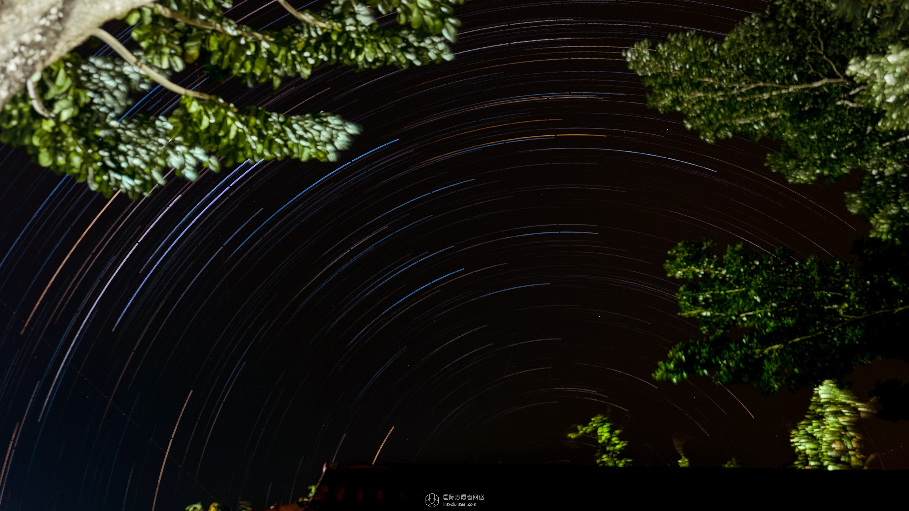
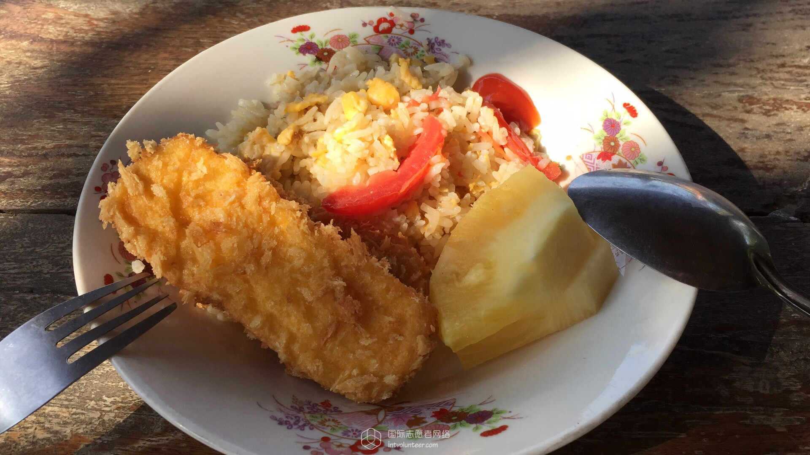
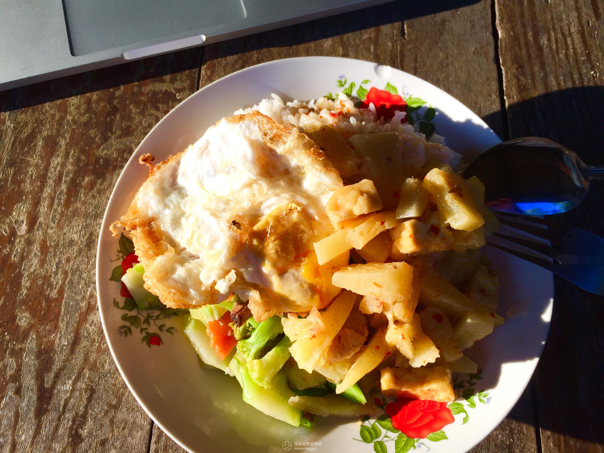
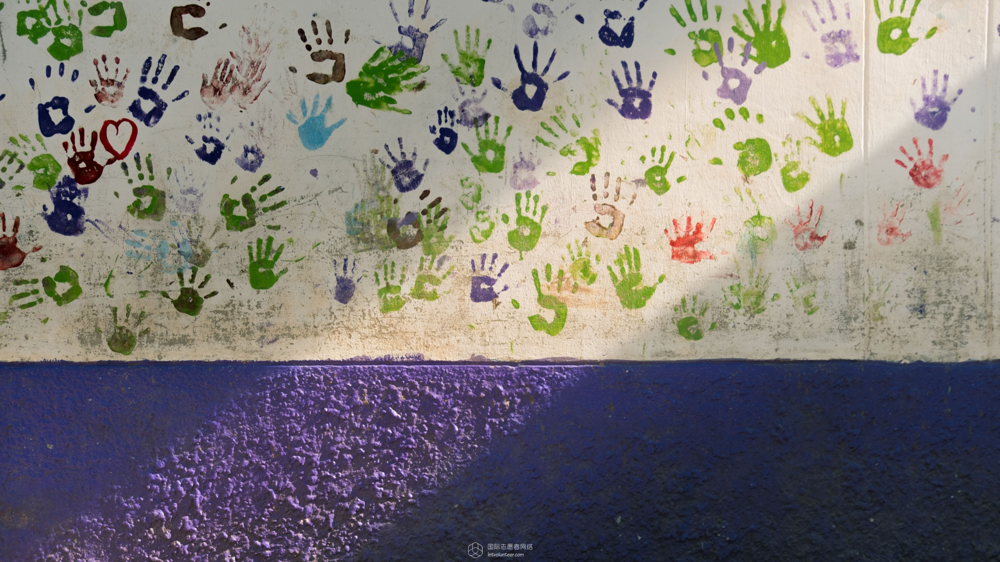

Greenville Thai Orphanage Project
Guidian Volunteer Network date： 2018-1-23 source：International volunteer network
Greenville Thailand Orphanage Project Photo Collection」
“These talking photos touch the heart.”
I would like to share my volunteer experience this week with these photos.
【Most of the photos below were taken by Fujifilm X-T2 and some were taken on mobile phones.】
I arrived at the camp at 11pm on Saturday. It was dark and I didn’t observe the surroundings carefully.
Woke up the next day, I am still very satisfied with the camp environment. A stone road connects all the dorms, and flowers and trees are everywhere.
I went to the nearest 711 on Sunday, about two kilometers from the camp, but there are free bicycles available at the camp.
[It is strongly recommended to bring sunscreen repellent water and the like] [You can also buy these in local 711]
In the evening, forcibly took a star track in front of the dormitory, but unfortunately there was no amazing prospect.

The camp's diet is mainly vegetarian, and meat can be eaten at noon during the week of the project.
[Lunch can also choose what to eat, you can eat each dish in five days.]
Personally, it is OK to eat, maybe Thai food comparison and my taste.


At 9 o'clock on Monday, we took the open-top bus to the orphanage.
When I first arrived at the orphanage, the children were still in class, so the initial impressions were left in the bricks and tiles of the orphanage.
From these photos, we can see the simple and simple houses of the orphanage, but there is no lack of warmth when the sun shines.

【Editors：Frank305】